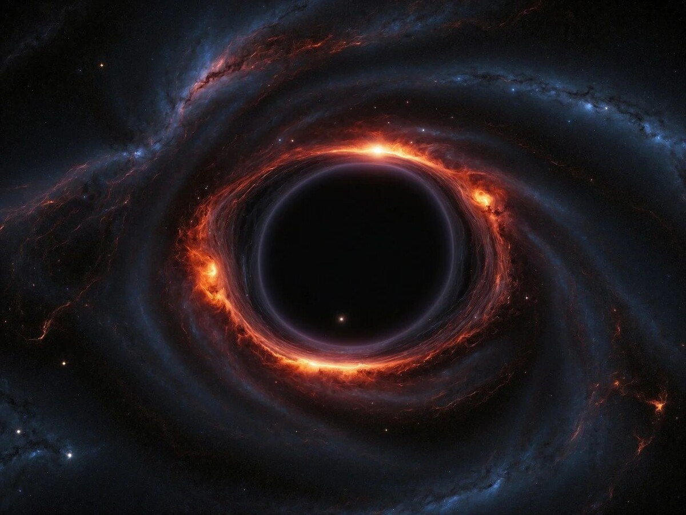

Загадки черных дыр
Черные дыры — это области пространства-времени, где гравитация настолько сильна, что даже свет не может её покинуть. Это самые загадочные объекты во Вселенной...

Почему мы спим?
Сон кажется нам просто отдыхом, но на самом деле это сложный и жизненно важный процесс. Во время сна наш мозг активно работает...

Искусственный интеллект: что дальше?
ИИ уже не фантастика, а часть нашей повседневной жизни. От голосовых помощников до беспилотных автомобилей...